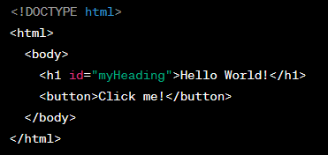

If HTML, CSS and JavaScript were parts of a house, HTML would be the blueprint - it lays out the foundations, walls, rooms ect. Then CSS is like the interior design - it specifies the color of the walls, picks out the furniture, sets the lighting, ect. JavaScript is like the electricity, it makes things happen - the lights turning on, the doorbell ringing when someone's at the door, ect. On a website, JavaScript is the code responsible for functionality and responsiveness, like letting you submit a form by clicking a button.
HTML:

CSS:
JavaScript:
Control Flow and Loops
Now we move on to control flow and loops. Say you're cooking your favorite dish. The control flow would be the recipe you're following: "do task 1, then task 2, ect." A loop is when you need to do a thing repeatedly, like stirring a pot ten times. Instead of saying "stir, stir, stir..." ten times, you can say "stir ten times". It's a shorter to to repeat something than explicitly writing out the same thing that many times.
The DOM (Document Object Model)
The DOM, or Document Object Model is like a model version of your website that you can play around with. It's a model that the browser uses to represent a website. You can use JavaScript to tweak it, like changing text, or switching the color of a button when it's clicked.
Arrays and Objects
Arrays and objects are two ways to store information.
An array is just like a list. You can find what you've stored by the lists number. So if you've left a string in list position 3, you go to that position to fetch it.
However an object behaves more like a box with labeled compartments. If you've put your data in the 'book' compartment, that's where you find it when you need it.
So for arrays, you use numbers (indexes) to find your data. For objects, you use names (keys).
Functions
Finally, functions. Each function is a piece of code that carries out a pre-defined task. You write it once, then call it over and over whenever you need it. It keeps your code tidy, and it saves you a lot of repeating yourself.